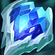
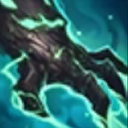
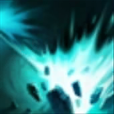
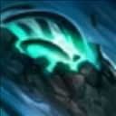
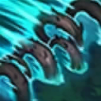

核心裝備
- 熾灼之冠
- 好戰者鎧甲

冰霜之心 自然之力
自然之力 雅瑪蘭守護像
雅瑪蘭守護像
以下為本站 7.2d 校正後的標準配置；實戰仍需依敵方陣容調整。



技能優先：Q > E > W

普攻週期性造成額外魔法傷害並治療自身；施法或被敵方技能命中會縮短冷卻。

釋放震波造成魔法傷害、緩速並把近身敵人擊退。

化為扭曲根鬚衝向指定敵人，期間不可被選取，抵達後將其定身。
丟出樹苗在地面守候，發現敵人後追擊並爆炸；草叢中的樹苗傷害與持續時間更強。

召喚多排巨大根鬚向前推進，命中敵方英雄會造成傷害與長時間定身。
2技突進定身 → 普攻觸發被動 → 1技擊回 → 3技封路
二技貼近後移動到敵人退路，用一技把目標擊向隊友，再丟樹精封鎖下一段撤退。
4技遠距藤蔓 → 2技跟進 → 1技擊退 → 3技封路
大絕從側面或河道長距離施放以延長定身，藤蔓命中後再用二技與一技延續控制。
3技草叢佈置 → 2技鎖定 → 1技 → 4技封退路
提前在物件入口草叢放樹精，敵人踩中緩速後點控進場，再用大絕封住其後援與撤退。
一技對野怪有額外傷害，搭配被動回復可保持健康清野。Gank 時二技是無法被指定的點控突進，貼近後繞到目標身後用一技將其擊回隊友方向。
物件刷新前把三技樹精放進河道草叢與入口，提供視野與緩速。大絕適合從側面或遠距離釋放，藤蔓移動越久定身越長，隊友跟進時再用二技鎖住核心。
依敵方進場方向決定主動開戰或反開。被動治療需要普攻觸發，承傷時穿插普攻維持血量；不要在隊友距離不足時獨自二技進入敵陣。
對局名單是本站依英雄機制與目前配置整理的參考，不等同固定勝率。
打野先維持標準刷野與節奏裝，只有敵方陣容或我方前排需求明顯時才調整。
觸發：敵方前排多，物件團與正面團戰會長時間卡在高生命目標上。
標準配置已經具備足夠打坦能力，維持核心即可。
觸發：敵方能在你進場或搶物件前快速把你秒掉。
蘭頓之兆提供高額物防並降低暴擊傷害。
觸發：進場或搶物件時經常被控制鏈直接中斷節奏。
改走水星之靴→鎖鏈軍靴，直接補韌性與魔防。
觸發：敵方前排、鬥士或吸血核心能在物件團長時間回復。
荊棘之甲讓前排在承受普攻或主動造成傷害時施加重創，同時補物防。
觸發：我方陣容沒有可靠第一承傷點，團戰需要有人更早進場吸收注意力。
你本來就是隊伍前排，維持標準坦裝並把資源用在正確抗性即可。
提醒：「缺前排」不代表所有打野都要改坦裝；刺客、法師與射手打野硬轉坦通常會失去英雄價值。
7.2a 打野正式版：技能名稱依 Riot Games 台灣《激鬥峽谷》茂凱英雄頁校正；坦克出裝與控制節奏參考 WildRiftFire 7.2a，打野路線依技能對野怪加成與本站實戰整理。Tier 與對局為本站綜合評級。｜v53：完成打野第二批正式版，完整套用李星固定母版，補齊起手裝、核心三件、五件成裝、技能加點、三組連招、對局與前中後期節奏。
本站於 2026-08-27 依 Patch 7.2d 重新檢查此配置。 Tier、出裝、符文與對局屬於 Wild Rift Guide 的整理與分析，不是 Riot Games 官方推薦；版本改動後會再依官方公告與實戰資料校正。